第十节 "Shallow Dive" MySQL 索引性能分析概要
"Shallow dive" MySQL 索引设计概要介绍了影响索引设计的几大因素，包括过滤因子、索引片的宽窄与大小以及匹配列和过滤列。
理想的三星索引的设计流程和套路，到目前为止虽然我们掌握了单表索引的设计方法，但是却没有分析预估索引耗时的能力。
1 基本问题法
当我们需要考虑对现有的 SELECT 查询进行分析时，哪怕没有足够的时间，也应该使用基本问题法对查询进行评估，评估的内容非常简单：
现有的索引或者即将添加的索引是否包含了 WHERE 中使用的全部列，也就是对于当前查询来说，是否有一个索引是半宽索引。
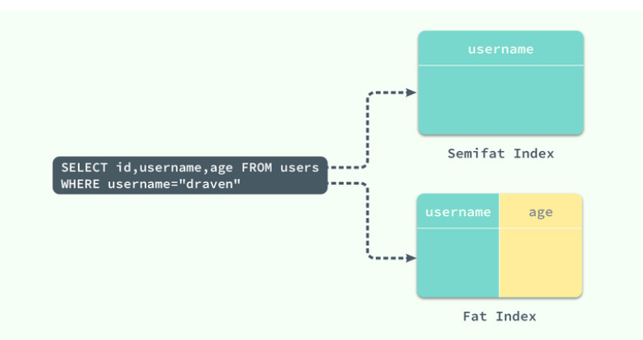
- 窄索引 (
username) 其实就叫做半宽索引，其中包含了WHERE中的全部的列username，当前索引的对于该查询只有一颗星, 它虽然避免了无效的回表查询造成的随机IO，但是如果当前的索引的性能仍然无法满足需要
select id, username from users where username="draven"
- 可以添加
age将该索引变成宽索引 (username, age) 以此来避免回表访问造成的性能影响；
select id, username, age from users where username="draven"
- 对于上图中的简单查询，索引 (
username, age) 其实已经是一个三星索引了，但是对于包含ORDER BY或者更加复杂的查询，(username, age) 可能就只是二星索引：
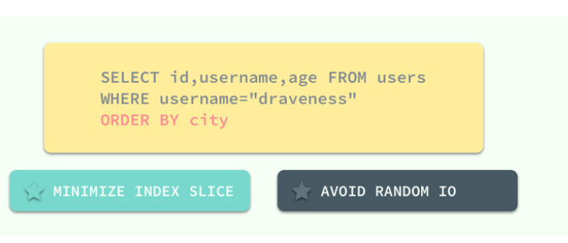
select id, username, age from users where username="draven" order by city
虽然基本问题法能够快速解决一些由于索引造成的问题，但是它并不能保证足够的性能，当表中有 (
city, username, age) 索引，谓词为WHERE username="draveness" AND age="21"时，使用基本问题法并不能得出正确的结果。
2 快速估算上限法
基本问题法非常简单，它能够最短的时间内帮助我们评估一个查询的性能，但是它并不能准确地反映一个索引相关的性能问题，而快速估算上限法就是一种更加准确、复杂的方法了；其目的在于在程序开发期间就能将访问路径缓慢的问题暴露出来，这个估算方法的输出就是本地响应时间（Local Response Time）：
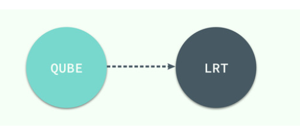
本地响应时间就是查询在数据库服务器中的耗时，不包括任何的网络延迟和多层环境的通信时间，仅包括执行查询任务的耗时。
1 响应时间
本地响应时间等于服务时间和排队时间的总和，一次查询请求需要在数据库中等待 CPU 以及磁盘的响应，也可能会因为其他事务正在对同样的数据进行读写，导致当前查询需要等待锁的获取，不过组成响应时间中的主要部分还是磁盘的服务时间：
本地响应 = 服务时间 + 排队时间
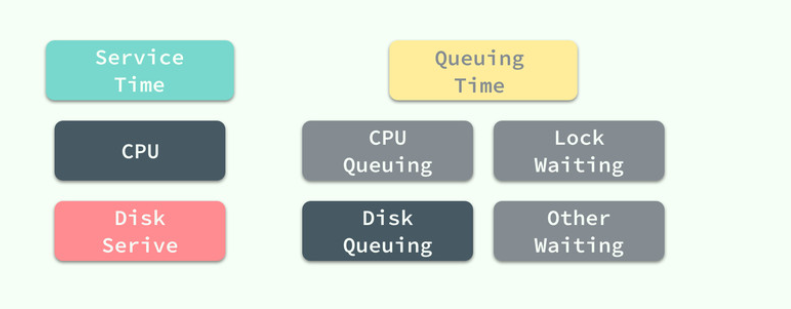
QUBE 在计算的过程中会忽略除了磁盘排队时间的其他排队时间，这样能够简化整个评估流程，而磁盘的服务时间主要还是包括同步读写以及异步读几个部分：
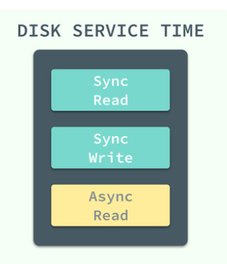
在排除了上述多个部分的内容，我们得到了一个非常简单的估算过程，
整个估算时间的输入仅为随机读和顺序读以及数据获取的三个输入，而它们也是影响查询的主要因素：
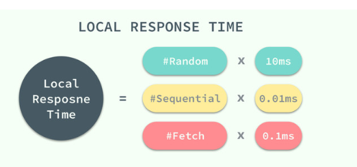
其中数据获取的过程在比较不同的索引对同一查询的影响是不需要考虑的，因为同一查询使用不同的索引也会得到相同的结果集，获取的数据也是完全相同的。
2 访问
当 MySQL 读取一个索引行或者一个表行时，就会发生一次访问，
- 当使用全表扫描或者扫描索引片时，读取的第一个行就是随机访问，随机访问需要磁盘进行寻道和旋转，所以其代价巨大，
- 而接下来顺序读取的所有行都是通过顺序访问读取的，代价只有随机访问的千分之一。
如果大量的顺序读取索引行和表行，在原理上可能会造成一些额外的零星的随机访问，不过这对于整个查询的估算来说其实并不重要；在计算本地响应时间时，仍然会把它们当做顺序访问进行估算。
3 示例
在这里，我们简单地举一个例子来展示如何计算查询在使用某个索引时所需要的本地响应时间，假设我们有一张 users 表，其中有一千万条数据：
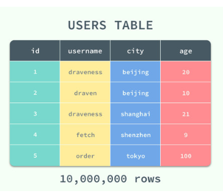
在该 users 表中除了主键索引之外，还具有以下 (username, city)、(username, age) 和 (username) 几个辅助索引，当我们使用如下所示的查询时：
select * from users where username="draven" and city="beijing"
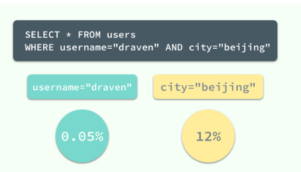
两个查询条件分别有着 0.05% 和 12% 的过滤因子，该查询可以直接使用已有的辅助索引 (username, city)，接下来我们根据表中的总行数和过滤因子开始估算这一步骤 SQL 的执行时间：
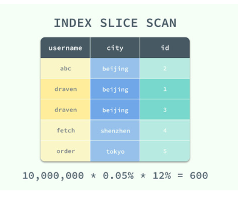
该查询在开始时会命中 (username, city) 索引，扫描符合条件的索引片，该索引总共会访问
10,000,000 * 0.05% * 12% = 600
条数据，其中包括 1 次的随机访问和 599 次的顺序访问，因为该索引中的列并不能满足查询的需要，所以对于每一个索引行都会产生一次表的随机访问，以获取剩余列 age 的信息：
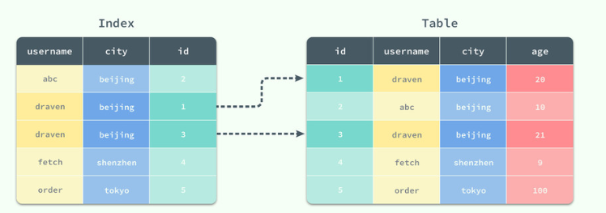
在这个过程中总共产生了 600 次随机访问，最后取回结果集的过程中也会有 600 次 FETCH 操作，
从总体上来看这一次 SQL 查询共进行了:
601次随机访问599次顺序访问和600次FETCH，
根据上一节中的公式我们可以得到这个查询的用时约为 6075.99ms 也就是 6s 左右，这个时间对于绝大多数应用都是无法接受的。
601*10 + 599 * 0.1s + 600*0.01(fetch) = 6010 + 59.9 + 6 = 6075.99ms
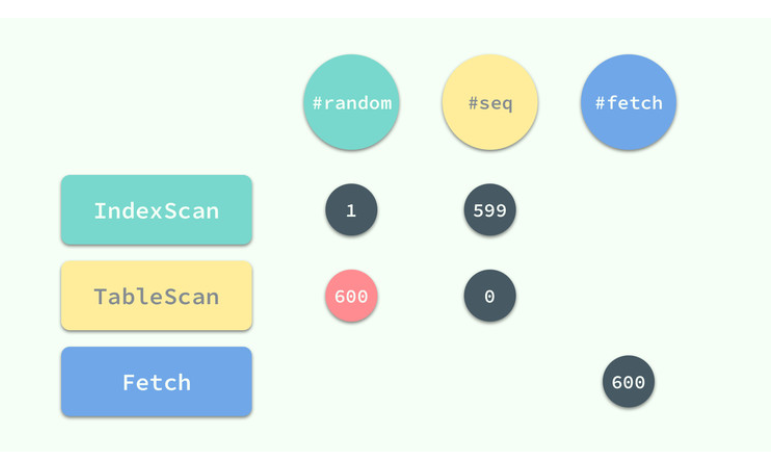
在整个查询的过程中，回表查询的 600 次随机访问成为了这个超级慢的查询的主要贡献，为了解决这个问题，我们只需要添加一个 (username, city, age) 索引或者在已有的 (username, city) 后添加新的 age 列就可以避免 600 次的随机访问：
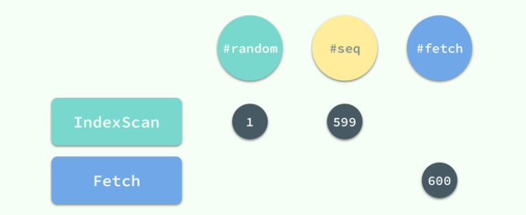
(username, city, age) 索引对于该查询其实就是一个三星索引了，